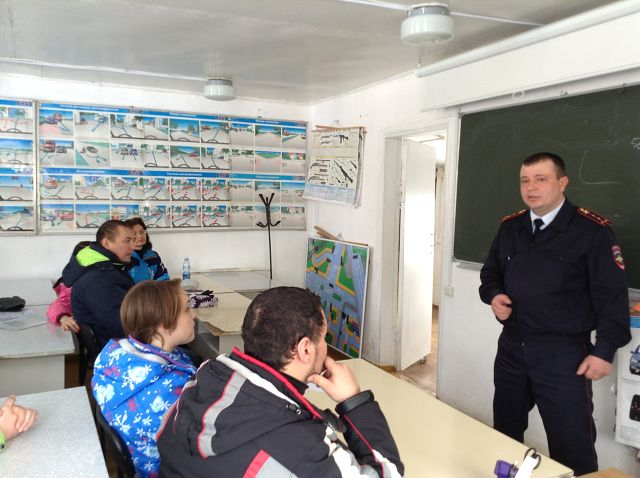

В целях информирования граждан о предоставляемых государственных услугах по линии МВД России, в том числе в электронной форме, в марта 2018 года государственным инспектором безопасности дорожного движения экзаменационного отделения МРЭО ГИБДД №2 УМВД России по Оренбургской области В.П. Афанасьевым проведена встреча с учащимися и преподавателями учебной организации. В ходе мероприятия разъяснены преимущества получения государственных услуг в электронном виде и порядок регистрации на ЕПГУ.
Доведена информация о предоставлении скидки 30% при оплате государственной пошлины за выдачу водительского удостоверения и регистрации транспортных средств через ЕПГУ, а также о возможности оценки качества предоставления государственной услуги с помощью интернет-сайта «Ваш контроль»
